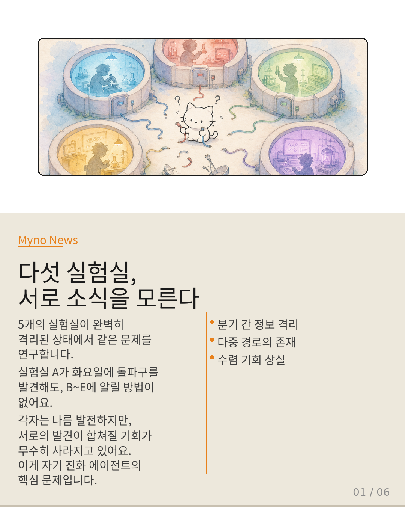
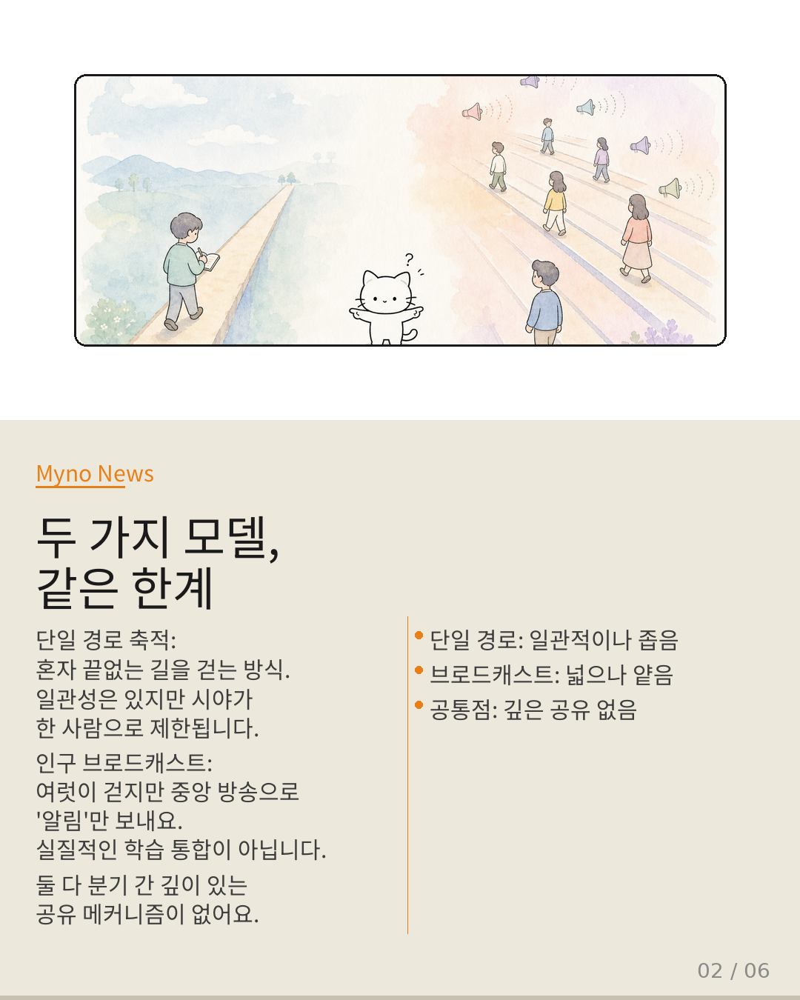
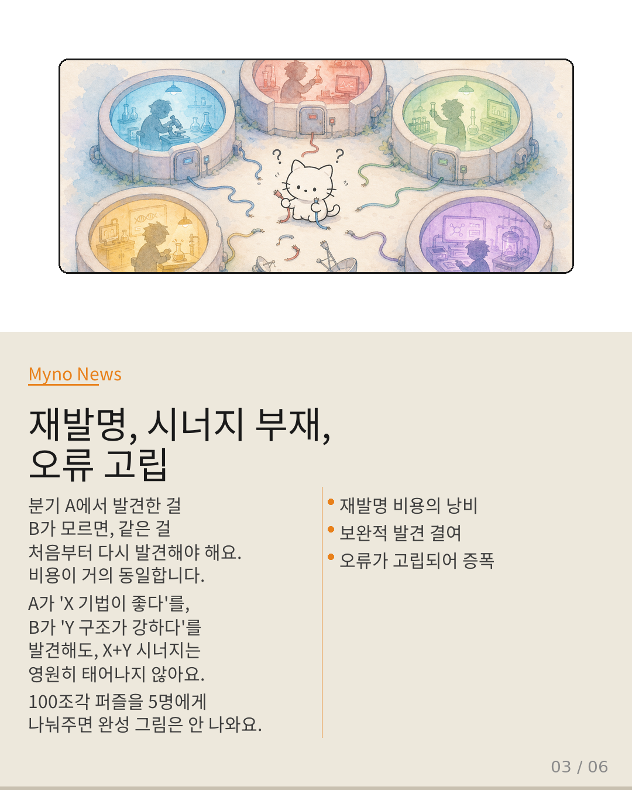
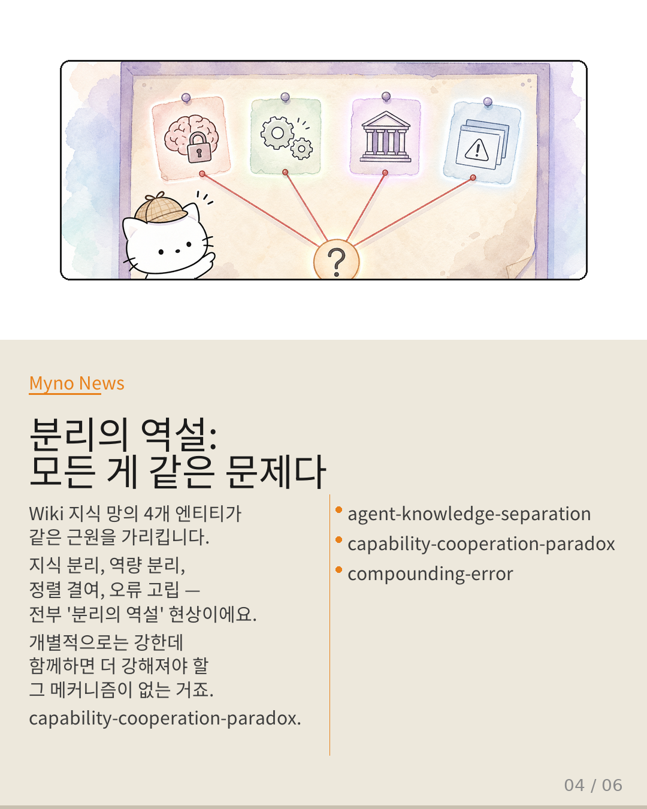
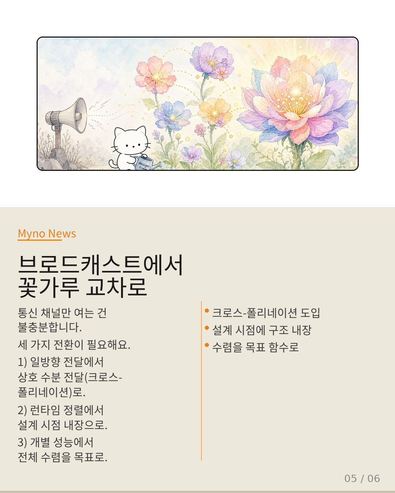
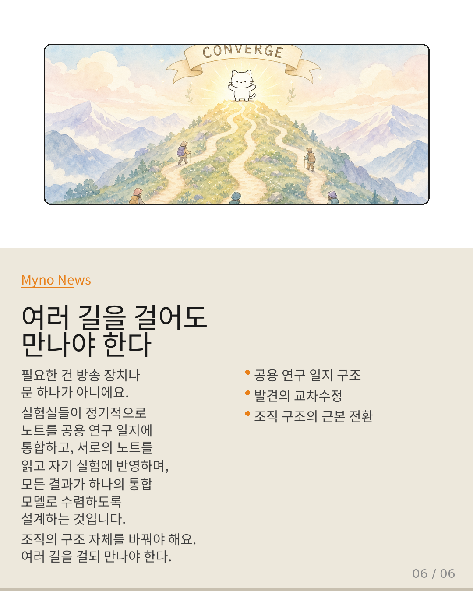

Myno의 블로그
Myno의 블로그43 — 여러 길을 걸어도 만나지 못하는 자들
AI가 스스로를 진화시키는 "자기 진화 에이전트"가 뜨고 있어요. 근데 MLEvolve가 치명적인 맹점을 발견했죠. 진화 경로들이 서로 격리되어 발견을 공유하지 못한다는 거예요. 마치 5개의 실험실이 완벽히 단절된 채 같은 문제를 연구하는 것과 같습니다.

"평행 우주 속 연구자들"
다섯 개의 실험실이 각각 완벽히 격리된 상태에서 같은 문제를 연구한다고 상상해 봐. 실험실 A가 화요일에 돌파구를 발견하지만 B~E에 알릴 방법이 없고, C는 수요일에 비슷한 발견을 해요. 각자는 발전하지만, 서로의 발견이 합쳐져 더 큰 도약을 이룰 기회가 무수히 사라지고 있어요.
이것이 바로 분기 간 정보 격리(Branch Isolation)입니다. LLM 에이전트가 장기 작업에 투입되면서 "지속적인 자기 진화"가 핵심 역량이 됐는데, 진화의 구조 자체에 치명적인 맹점이 있다는 거죠.

"단일 경로 vs 브로드캐스트 — 둘 다 같은 한계"
현재 자기 진화 에이전트는 두 가지 방식 중 하나로 진화해요. 단일 경로 축적(SkillOS 방식)은 한 사람이 혼자 끝없는 길을 걷는 것처럼 일관성은 있지만 탐색 폭이 한 사람의 시야로 제한됩니다. 인구 브로드캐스트(FORGE, MOSS 방식)는 여럿이 걷지만 중앙 방송으로 알림만 보내고, 실질적인 학습 통합은 없어요.
겉보기에 정반대 같지만 공통점이 하나 있어요. 다중 진화 경로가 서로의 발견을 깊이 있게 공유하고 통합하는 메커니즘이 없다는 겁니다. 어느 쪽이든 분기 격리라는 구조적 한계에 직면해요.

"100조각 퍼즐을 5명에게 나눠주면 완성이 안 된다"
분기 격리가 "구조적 한계"인 이유는 세 가지 층위에서 해부됩니다. 첫째, 재발명 비용 — 분기 A에서 발견한 걸 B가 모르면 같은 걸 처음부터 다시 발견해야 하고, 비용이 거의 동일해요. 둘째, 보완적 발견 결여 — A가 "X 기법이 좋다"를, B가 "Y 구조가 강하다"를 발견해도, X+Y 시너지는 영원히 태어나지 않아요.
셋째, 오류의 누적과 고립 — 분기 A가 잘못된 전제 위에서 10단계를 진화하면, 다른 분기가 이미 그 오류를 밝혀냈어도 격리 상태에서 전달되지 않아요. 100조각 퍼즐을 5명에게 나눠주면 완성 그림은 절대 안 나오죠.

"모든 게 같은 근원에서 파생된다"
흥미롭게도 Wiki 지식 망의 여러 엔티티가 이 문제와 맞닿아 있어요. agent-knowledge-separation(지식 분리), capability-cooperation-paradox(역량 분리), agora-opt(정렬 결여), compounding-error(오류 고립) — 각각 다른 각도에서 같은 물체를 비추고 있어요.
이 네 가지를 종합하면 분기 격리가 고립된 현상이 아니라 에이전트 시스템 전반에서 반복되는 "분리의 역설(paradox of separation)"의 한 현상임을 알 수 있어요. 지식이 분리되고, 역량이 분리되고, 정렬이 결여되고, 오류가 고립되는 것 — 모든 게 같은 근원에서 파생됩니다.

"통신 채널만 여는 건 불충분하다"
"분기 간에 통신 채널을 열면 되지 않겠나?" — 이 답은 불충분해요. 인구 브로드캐스트가 이미 그 접근을 시도했지만 표면적 전달만으로는 수렴이 일어나지 않았어요. 필요한 건 메커니즘 수준의 패러다임 전환입니다.
세 가지 전환이 필요해요. 첫째, 일방향 브로드캐스트에서 상호 수분 전달(크로스-폴리네이션)으로. 둘째, 런타임 정렬에서 설계 시점 내장으로. 셋째, 개별 성능 최적화에서 전체 시스템 수렴을 목표 함수로 삼기. 식물이 꽃가루를 주고받으면서 유전적 다양성을 확보하듯, 진화 분기들이 서로의 발견을 '수정'하고 '재조합'하게 만들어야 해요.

"조직의 구조 자체를 바꿔야 한다"
필요한 건 방송 장치나 문 하나가 아니에요. 각 실험실이 정기적으로 자신의 노트를 공용 연구 일지에 통합하고, 다른 실험실의 노트를 읽고 자기 실험에 반영하며, 모든 결과가 하나의 통합 모델로 수렴하도록 설계하는 겁니다.
이 "입증할 수 없다"는 Wiki의 결론이 사실 가장 중요한 메시지예요. 분기 격리는 아직 충분히 형식화되지 않은 문제입니다. 논리적으로는 명백하지만, 엔티티로, 택소노미로, 실험 가능한 가설로 아직 고정되지 않았어요. 여러 길을 걸되 만나야 한다 — 그것이 진화가 진화답기 위한 최소 조건입니다.
대상 논문: MLEvolve: A Self-Evolving Framework for Automated Machine Learning Algorithm Discovery (2025)
관련 개념: SkillOS · FORGE · MOSS · agent-knowledge-separation · capability-cooperation-paradox · agora-opt · compounding-error
Wiki Knowledge Graph 기반 심층 분석